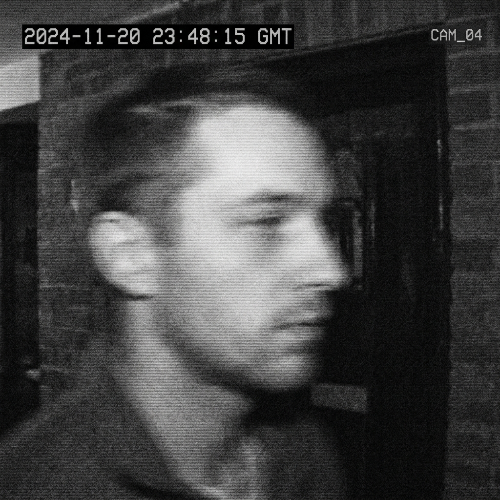

Engineering Autonomous Robotics & Scaled AI Systems.
Undergraduate engineer at IIT Kanpur specializing in distributed multi-agent data pipelines, parallel multi-GPU model inference, 6-DoF underwater robotic autonomy, and multi-modal deep learning vision systems.
Engineering Workbenches
Live interactive simulations across distributed multi-GPU routing, agentic schema healing, medical X-ray vision diagnostics, and 6-DoF underwater robotics.
Agentic Data Ingestion Pipeline & Delta Lake Engine
Architected an object-oriented ingestion framework connecting Kafka, PostgreSQL, and Elasticsearch to Delta Lake. Packaged as Python wheels (.whl) for CI/CD deployment on Databricks.
- Source Abstraction to Delta Lake: Source-dependent only at the initial connector layer; downstream operations are 100% unified on Delta Lake tables.
- Spark Collision & Struct Auditing: Handled schema drift, nested struct changes, and Spark lowercase casing collisions (e.g. Col A vs col a $\rightarrow$ a2) via automated conflict-renaming and reason-based audit tables.
- Phi-4 Canonical Metadata & Safe Unions: Profiled column stats (cardinality, null rates) with Phi-4, clustering semantic embeddings to execute safe unions (Simple, Cast, Struct-Enlarge) under strict mutual exclusivity.
- Claude Opus Self-Healing: Orchestrated Claude Opus for baseline review, automated root-cause error diagnosis, dynamic parameter auto-tuning, job reruns, and ticketing/email alerts.
| Source | Raw Payload | Delta Destination | Status |
|---|---|---|---|
| Kafka | topic/telemetry_v1 | /mnt/delta/raw_stream | Active |
| Postgres | orders_cdc_stream | /mnt/delta/raw_postgres | Active |
| Elastic | logs_telemetry_idx | /mnt/delta/raw_elastic | Active |
| Incoming Column | Spark Collision Action | Target Column | Audit Reason |
|---|---|---|---|
Col A (Int) | Lowered | col_a | Baseline Registered |
col a (Float) | Casing Collision | col_a_2 | Spark Case Duplicate |
device_meta | Struct Field Add | device_meta_v2 | Struct Mutated |
| Column Pair | Cosine Sim | Phi-4 Union Strategy | Collisions |
|---|---|---|---|
col_a + col_a_2 | 0.96 | Cast Union (Int➔Float) | 0 (Exclusive) |
device_meta_v2 | 0.94 | Struct-Enlarge Union | 0 (Exclusive) |
cust_id + user_id | 0.98 | Simple Union | 0 (Exclusive) |
• Parameter Auto-tuning: Dynamically adjusts batch timeouts & memory buffers.
• Auto-Ticketing: Triggers automated Jira incident tickets & developer email alerts.
Distributed Multi-GPU Inference & Dynamic Ray Router
Engineered high-throughput distributed parallel inference across a cluster of 3 NVIDIA Thor GPUs using Ray. Designed an intelligent central load-balancing router with automated failover and dynamic disaster recovery.
- Central Load-Balancing Router: Dynamically distributed streaming inference requests across active Thor GPUs with sub-millisecond scheduling.
- Automated Disaster Recovery: Designed instant failover rerouting traffic when a GPU node goes offline and rebalancing load seamlessly upon node revival.
- Parallelism Benchmark Findings: Proved Tensor Parallelism optimal for large model training memory-fit, and Multi-Instance Replication vastly superior for high-throughput real-time inference.
Multi-Modal Chest X-Ray Diagnostic Vision Model
Developed a multi-modal vision model for automated disease diagnosis from chest X-ray imaging, reducing dependency on expensive and radiation-heavy CT scans.
- Thoracic Pathology Detection: Engineered vision models automatically detecting cardiomegaly, pleural effusion, lung shrinkage, pneumothorax, and advanced pulmonary pathologies.
- Radiologist Assistance Tool: Built visual attention localization (Grad-CAM) assisting radiologists in obtaining faster, more accurate diagnoses.
- Affordable Healthcare Screening: Enabled accurate triage using low-cost conventional X-rays in place of expensive secondary scans.
ATAL AUV — 8-Thruster 6-DoF Cascaded Autonomy
Designed 8-thruster 6-DoF dynamic stabilization, state estimation with Extended Kalman Filters (EKF), and real-time underwater computer vision running on NVIDIA Jetson Orin Nano for international maritime competition.
- 8-Thruster Cascaded Control: 4 vectored horizontal + 4 vertical thrusters governing pitch, roll, yaw, depth, surge, and sway.
- Custom EKF Sensor Fusion: Fused IMU, Doppler Velocity Log (DVL), and Bar30 pressure depth sensors in real time.
- Perception at 30 FPS: Fine-tuned YOLOv11 & SSD on turbid pool datasets with dual IDS imaging cameras.
Granular Particle Flow Chute Profiler
Coupled YOLOv11 particle detection with SAM2 instance segmentation on high-speed industrial chute video streams for automated multiphase quality control.
- Chute Bench Setup: Engineered an inclined-plane experimental bench with LED backlighting for iron ore and sinter particles.
- 99.2% mAP@0.5 Accuracy: Hybrid computer vision pipeline segmenting occluded and high-velocity moving particles.
- Morphology Extraction: Computed real-time aspect ratio, sphericity, and contact eccentricity metrics.
Lunar Surface Elemental Mapping Pipeline
Built a high-resolution lunar surface elemental abundance mapping pipeline utilizing Chandrayaan-II X-ray Fluorescence (XRF) spectral data.
- Solar Flare Isolation: Synchronized NASA timestamp logs to filter background quiescent periods and eliminate flare interference.
- Spatial Interpolation: Enhanced elemental spatial resolution across lunar coordinates for Mg, Al, Si, Ca, and Fe.
- Competition Standing: Ranked 2nd in XRF Catalogue and 6th Overall among 23 IITs nationwide.
Forensic Face Reconstruction & 3D Frontalization
Reconstructed high-resolution frontal faces from low-quality, blurry CCTV surveillance footage to automate forensic sketch generation for law enforcement.
- Blur Detection & Deblurring GANs: Trained custom YOLOv8 for blur classification and evaluated PSNR/SSIM improvements with GAN architectures.
- 3D Frontalization: Applied landmark feature alignment and 3D yaw angle estimation to correct extreme profile angles.


Scholastic Achievements
National competitive standings and research fellowships across premier academic bodies in India.
Leadership & Campus Impact
Leading multidisciplinary robotics teams, directing institute festival budgets, and spearheading developer communities at IIT Kanpur.
Spearheading 30+ undergraduate engineers to conduct autonomous underwater robotics research and engineer competition-grade vehicles for SAUVC Singapore.
Secured major sponsorships via technical showcases and procured ₹1L+ workstation hardware.
Overseeing the institute-wide establishment and operations of IIT Kanpur's flagship academic and career festival, structuring 4 core verticals.
Directing marketing, corporate outreach, academic symposia, and career development initiatives.
Curated comprehensive learning roadmaps in Computer Vision and Deep Learning; organized institute-wide hackathons and mentored 100+ student developers.
Won 2nd place in Computer Vision & Robotics at Takneek '24, IIT Kanpur's inter-hall technical championship.
Technical Matrix & Coursework
Core programming languages, frameworks, system infrastructures, and foundational coursework.